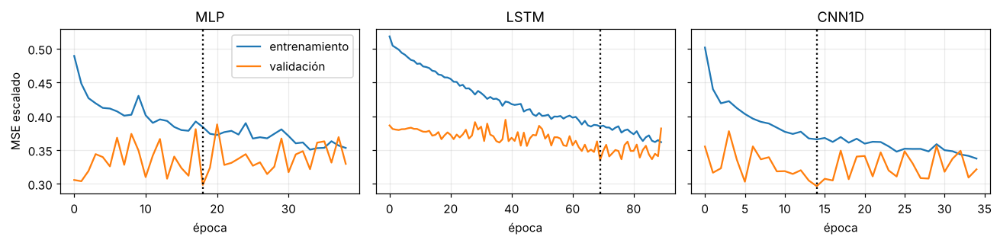

5. Implementación de los tres modelos base#
%matplotlib inline
import sys, warnings, json
from pathlib import Path
ROOT = Path.cwd()
while not (ROOT / "src").exists(): ROOT = ROOT.parent
sys.path.insert(0, str(ROOT / "src"))
warnings.filterwarnings("ignore")
import numpy as np, pandas as pd, matplotlib.pyplot as plt
from IPython.display import Markdown, display
plt.rcParams.update({"figure.dpi": 110, "axes.grid": True, "grid.alpha": .25, "figure.figsize": (9, 3.4)})
from tsbase import config as C
from tsbase.data import load_energy, Windows, sha256, energy_path
import inspect, torch
from tsbase import models as M
from tsbase.models import MODELS, SPACES, n_params
best = {k: v["best"] for k, v in json.load(open(ROOT / "results/search.json")).items()}
runs = pd.read_csv(ROOT / "results/final_runs.csv")
5.1 Código de los modelos#
Implementados desde cero con las capas primitivas de PyTorch (sin importar arquitecturas prediseñadas). Versiones de software en requirements.txt y en la Sección 5.4.
print(inspect.getsource(M.MLP)); print(inspect.getsource(M.LSTM1)); print(inspect.getsource(M.CNN1D))
class MLP(nn.Module):
def __init__(self, hidden=64, layers=1, dropout=0.0, L=C.L, H=C.H, **_):
super().__init__()
mods, d = [], L
for _i in range(layers):
mods += [nn.Linear(d, hidden), nn.ReLU(), nn.Dropout(dropout)]
d = hidden
mods.append(nn.Linear(d, H))
self.net = nn.Sequential(*mods)
def forward(self, x): # x: (B, L)
return self.net(x)
class LSTM1(nn.Module):
def __init__(self, hidden=32, dropout=0.0, H=C.H, **_):
super().__init__()
self.rnn = nn.LSTM(1, hidden, num_layers=1, batch_first=True)
self.drop = nn.Dropout(dropout)
self.head = nn.Linear(hidden, H)
def forward(self, x):
out, _ = self.rnn(x.unsqueeze(-1))
return self.head(self.drop(out[:, -1]))
class CNN1D(nn.Module):
def __init__(self, channels=32, kernel=3, convs=1, dropout=0.0, L=C.L, H=C.H, **_):
super().__init__()
mods, cin = [], 1
for _i in range(convs):
mods += [nn.Conv1d(cin, channels, kernel, padding=kernel // 2), nn.ReLU()]
cin = channels
self.conv = nn.Sequential(*mods)
self.drop = nn.Dropout(dropout)
self.head = nn.Linear(channels * L, H)
def forward(self, x):
z = self.conv(x.unsqueeze(1))
return self.head(self.drop(z.flatten(1)))
5.2 Configuraciones seleccionadas y número de parámetros#
Las expresiones analíticas del Cap. 3 se verifican contra el conteo real de PyTorch:
L, H = C.L, C.H
c = best["MLP"]; a_mlp = (L + 1) * c["hidden"] + (c["hidden"] + 1) * H if c["layers"] == 1 else None
d = best["LSTM"]["hidden"]; a_lstm = 4 * d * (d + 3) + (d + 1) * H
c = best["CNN1D"]; a_cnn = c["channels"] * (c["kernel"] + 1) + (c["channels"] * c["kernel"] * c["channels"] + c["channels"]) * (c["convs"] - 1) + (c["channels"] * L + 1) * H
rows = []
for name, an in [("MLP", a_mlp), ("LSTM", a_lstm), ("CNN1D", a_cnn)]:
kw = {k: v for k, v in best[name].items() if k not in ("lr", "weight_decay", "batch", "clip")}
rows.append({"modelo": name, "hiperparámetros": json.dumps(best[name]), "parámetros (PyTorch)": n_params(MODELS[name](**kw)), "parámetros (fórmula)": an})
pd.DataFrame(rows).style.hide(axis="index")
| modelo | hiperparámetros | parámetros (PyTorch) | parámetros (fórmula) |
|---|---|---|---|
| MLP | {"hidden": 128, "layers": 1, "dropout": 0.2, "lr": 0.003, "weight_decay": 0.0001, "batch": 32} | 5004 | 5004 |
| LSTM | {"hidden": 16, "dropout": 0.1, "lr": 0.001, "weight_decay": 0.0, "batch": 32, "clip": 0.5} | 1420 | 1420 |
| CNN1D | {"channels": 32, "kernel": 3, "convs": 1, "dropout": 0.0, "lr": 0.003, "weight_decay": 0.0001, "batch": 32} | 10124 | 10124 |
5.3 Curvas de entrenamiento y validación (semilla 1000)#
fig, ax = plt.subplots(1, 3, figsize=(12, 3), sharey=True)
for a, name in zip(ax, MODELS):
h = np.array(json.load(open(ROOT / f"results/hist/{name}_1000.json"))); a.plot(h[:, 0], label="entrenamiento"); a.plot(h[:, 1], label="validación")
a.axvline(runs.query("model==@name and seed==1000").best_epoch.iloc[0] - 1, ls=":", c="k"); a.set_title(name); a.set_xlabel("época")
ax[0].set_ylabel("MSE escalado"); ax[0].legend(); plt.tight_layout(); plt.show()

La línea punteada marca la época elegida por early stopping (mínimo de validación). La brecha entrenamiento→validación en MASE es de 6.5 % (MLP) a 11 % (CNN 1D); se cuantifica en el Cap. 6.6. Las curvas son de una sola semilla y solo ilustran el procedimiento.
5.4 Entorno, tiempo y reproducibilidad#
import platform, sklearn, scipy, statsmodels
pd.Series({"Python": platform.python_version(), "PyTorch": torch.__version__.split("+")[0], "NumPy": np.__version__, "pandas": pd.__version__, "scikit-learn": sklearn.__version__,
"SciPy": scipy.__version__, "statsmodels": statsmodels.__version__, "Hardware": "CPU (2 núcleos, 1 hilo por entrenamiento), sin GPU", "Determinismo": "estricto (torch.use_deterministic_algorithms(True))"}).to_frame("versión")
| versión | |
|---|---|
| Python | 3.13.18 |
| PyTorch | 2.15.0 |
| NumPy | 2.5.3 |
| pandas | 3.0.5 |
| scikit-learn | 1.9.1 |
| SciPy | 1.18.1 |
| statsmodels | 0.15.0 |
| Hardware | CPU (2 núcleos, 1 hilo por entrenamiento), sin... |
| Determinismo | estricto (torch.use_deterministic_algorithms(T... |
runs.groupby("model")[["epochs", "train_time_s", "infer_ms_per_window", "n_params"]].agg(["mean", "std"]).round(3)
| epochs | train_time_s | infer_ms_per_window | n_params | |||||
|---|---|---|---|---|---|---|---|---|
| mean | std | mean | std | mean | std | mean | std | |
| model | ||||||||
| CNN1D | 33.4 | 8.422 | 1.743 | 0.450 | 0.004 | 0.002 | 10124.0 | 0.0 |
| LSTM | 74.8 | 25.677 | 5.854 | 1.989 | 0.006 | 0.002 | 1420.0 | 0.0 |
| MLP | 25.9 | 5.877 | 0.903 | 0.213 | 0.001 | 0.000 | 5004.0 | 0.0 |